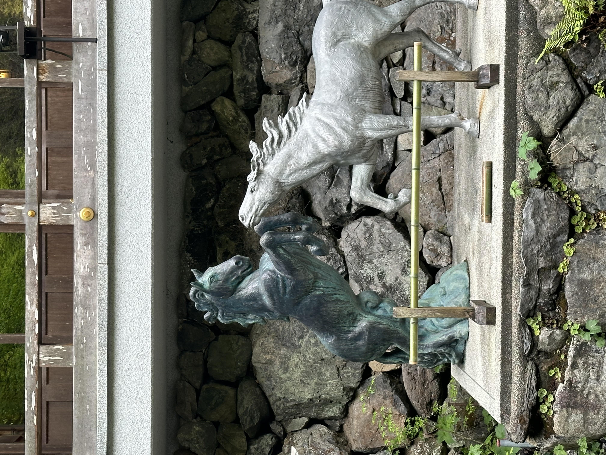

歴史と概要
貴船神社は、京都市左京区に位置する古社で、水の神様である高龗神（たかおかみのかみ）を祀っています。この神社は、平安時代から続く歴史を持ち、雨乞いや縁結びの神様として信仰されています。特に、水源の守護神として農業や生活に欠かせない存在として、多くの人々から崇敬を集めています。
自然の中の神聖な空間
貴船神社は、自然豊かな環境に囲まれており、四季折々の風景を楽しむことができます。春は桜、夏は新緑、秋は紅葉、冬は雪景色と、訪れるたびに異なる美しさを見せてくれます。特に石段と赤い灯籠のコントラストは印象的で、神社へと続く道はまるで異世界への入り口のようです。

鳥居と灯籠
境内に入ると、まず目に飛び込んでくるのは鮮やかな朱色の鳥居と灯籠です。これらの鳥居と灯籠は、神社のシンボルともいえる存在で、参拝者を神聖な領域へと導きます。特に、参道の両脇に並ぶ灯籠が創り出す光と影のコントラストは、訪れる人々に静謐な雰囲気を提供します。

馬の像
また、境内には美しい馬の像が立ち並び、これも貴船神社の特徴の一つです。これらの像は、神馬（しんめ）として神聖な存在とされ、訪れる人々の目を楽しませます。神社の歴史や文化に触れる中で、こうした彫像もまた、その魅力の一部として感じられるでしょう。
最後に
貴船神社は、その豊かな自然と歴史、そして神聖な雰囲気で訪れる人々を魅了します。水の神様を祀るこの神社は、現代でも多くの人々にとって特別な場所であり続けています。ぜひ一度、貴船神社の静寂と美しさを体験してみてください。